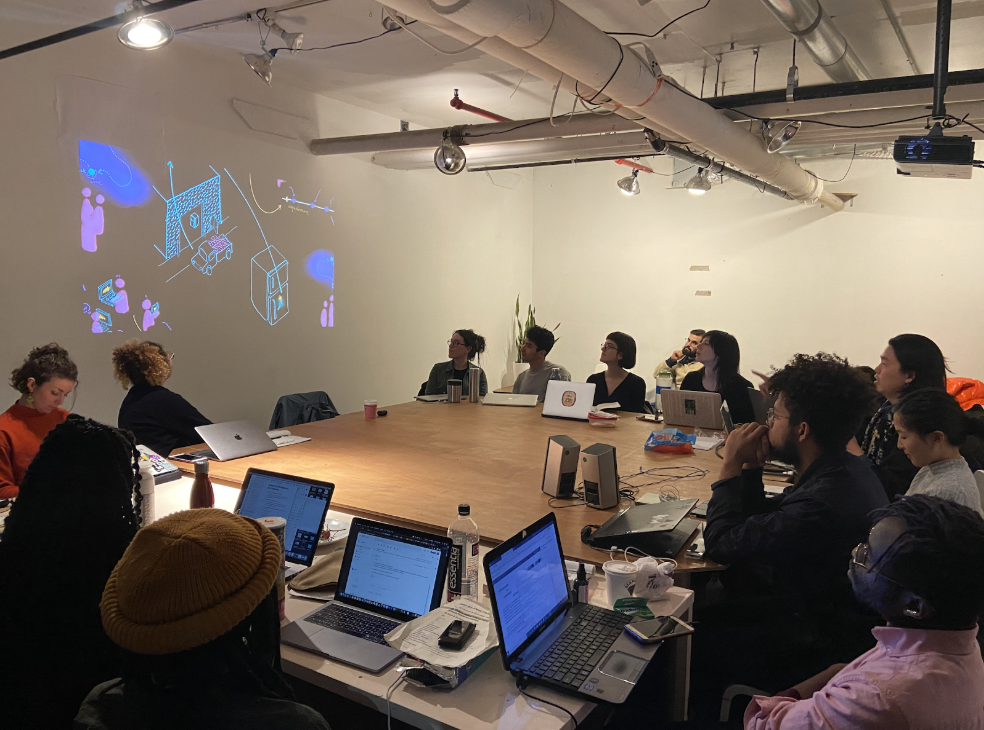

We responded with answers such as:
This question, this opener, this icebreaker, immediately unlocked an interesting phenomenon. It unlocked a realization and new understanding immediately upon being asked. That is, that we embody space. That space is alive. That space is dynamic. That not all spaces feel the same.
We have relationships with and to spaces, so it’s important to consider the dynamics of the relationships.
After Dan Taeyoung gave us an introduction about his background and collective spaces he is a part of (Soft Surplus, Prime Produce, Small Data Squad), they guided us to think about how agency works in the context of space.
THE SCENARIO: There is a subway stair which is slightly higher than the rest of the steps. This height difference isn’t quite recognizable by the eye but when people are moving up the stairs, it causes a large percentage of people to trip.
THE QUESTION: Whose fault is this, if anyone’s?
Many people going about their commute, when they tripped probably just assumed that it was their fault. Many probably didn’t question the design system of the stairs itself. However, as it turns out this flaw in the staircase is actually against code and is something that should be fixed. But sometimes, we don’t notice the system every time it fails.
Code Societies takes place at 155 Bank St in the courtyard of the Westbeth Artists Community in the West Village, New York City. Our classes took place 6:30pm-9:30pm. There were 18 students. We sat in a circle format. Teachers sat in the circle with us.
This space with the people in it was unique. It will never be replicated precisely. And each day brought with it, new dynamics, although guided and founded on care, love, and commitment to each other. Space is alive and dynamic, but oftentimes certain dynamics greatly influence how it is shaped and how it shapes us. Additionally, not all spaces have a foundation of care, love, and commitment to each other. If they did, things might look a bit different. Perhaps, the earlier mentioned issue involving the staircase would not exist. Perhaps, in general, our public transportation would actually be accessible for all. Perhaps, people could move about more comfortably and live their life with relatively less stress.
Redlining: the drawing of geographic lines around “risky” zones - geography is used as a proxy for race. The result is the racist denial of services + systems in place that make it difficult to invest in community (ie higher mortgage rates).
Bathrooms are gendered. Baby changing stations are generally placed in women’s bathrooms rather than men’s.
Tourist industries flock to places such as the Caribbean and make claims to land that is not theirs. Their profit is theirs, not shared.
Spatialized violence continues in the form of prisons and internment camps.
Gentrification is rampant. People are denied housing as landlords hold vacant properties and kick people out of homes in hopes of eventually making an exceptionally high profit off of these homes when they sell them to corporations. As was the case with Moms 4 Housing.
When space is generally shaped for us by certain codes, what does an alternative look like? During this week, an important point was brought up: Utopia is imagined by who is not there. Who is left out in utopic visions? At the same time, I wonder how we could stretch and grow our utopic visions, our dreams, our intuitive nature.
Many collective spaces start out as a dream. Dan Taeyoung, Melanie Hoff, and Austin Wade started Soft Surplus and now it’s a dreamy space and group consisting of around twenty or so members. This collective has it’s own way of providing space, handling decisions, and caring for each other. A collective code is akin to a unique programming language, one with its unique values baked into it.
As an exercise, we created our own online chatbot + chatroom in Glitch complete with collective personalization and coded callbacks. Using Glitch was nice because we got to all see the code, interact with the chatroom, and live edit.
It was interesting imagining what it would be like to have more control and say in social media. Social media is a space. It occupies physical space (servers, offices, storage on our devices) and digital space. And we also inhabit the physical / digital realms.
When thinking about how space is shaped, I couldn’t help but wonder what spatial violence occurs from social media and the benefits to co-creating our own digital spaces, ones that may be more thoughtful and ones where we can make decisions and know the code that goes into shaping space.
I hope we learn to be gentle with ourselves and others. Space and how it functions often can seem like an invisible force. When out and about, we don’t often see the actual demarcations / redlines of redlining. We don’t often see the step that’s a bit higher than the rest. And sometimes, we even take things for granted especially if we move around with relative ease, especially if space is designed for us in mind.
Let’s code new spaces coded with full transparency, allowing for intimate openness, and healing.